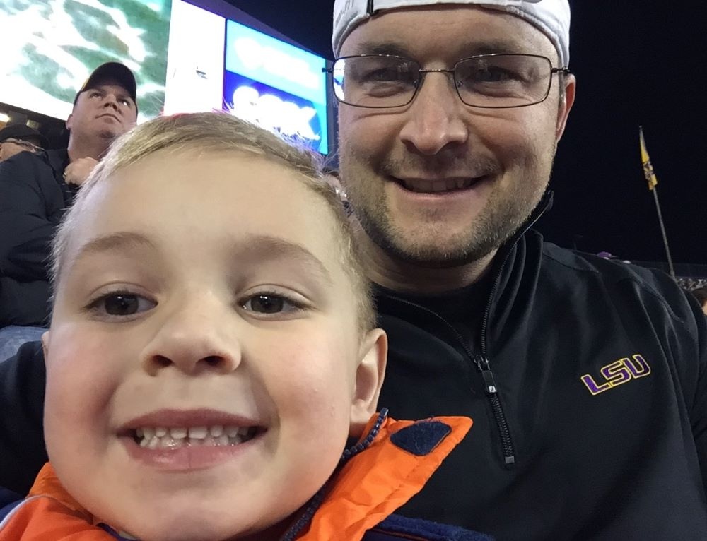

Not even temperatures dipping into the 40s could temper our excitement as the team quickly took control of the game. Four different Tigers scored touchdowns in the first half to give LSU a 28-0 leading heading back into the locker room at the break. Two more scores in the second half sealed the deal to put the game out of reach in the fourth quarter.
Page 4